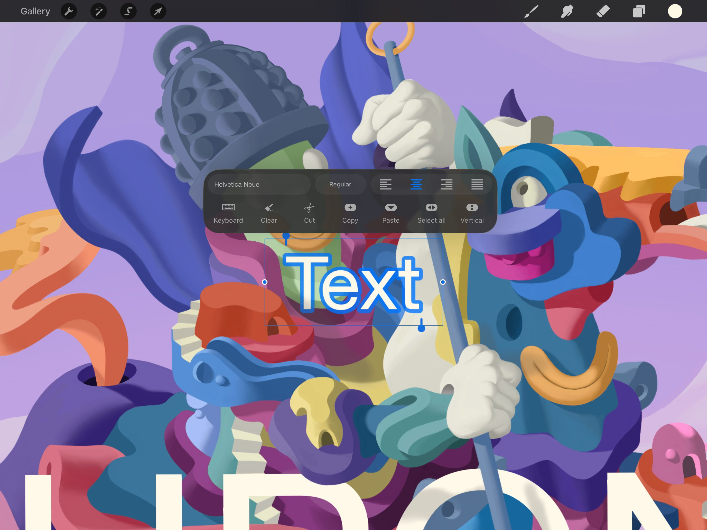

📖 Đã dịch sang tiếng Việt. Thuật ngữ chuyên môn giữ tiếng Anh — rê chuột để xem nghĩa (tooltip).
Edit Style
Xem trước phông chữ theo thời gian thực, điều chỉnh khoảng cách chữ (kerning), khoảng cách dàn chữ (tracking), đường cơ sở (baseline) và các thiết lập kiểu chữ khác. Chỉnh sửa qua chuỗi thanh trượt và điều khiển trực quan.
Bảng Edit Style (chỉnh kiểu)
Giao diện gọn gàng đặt mọi công cụ tạo kiểu văn bản bạn cần ngay trong tầm tay.


Thêm Text mới vào khung vẽ và tạo kiểu phông chữ. Chạm đôi vào Text để mở Text Entry Companion. Chạm vào tên phông chữ trong Text Entry Companion để mở bảng Edit Style.
Khi xong, hãy chạm ra ngoài văn bản hoặc bắt đầu chỉnh sửa các lớp khác để đóng bảng Edit Style.
Mở lại bảng Edit Style bất cứ lúc nào bằng cách chạm đôi vào Text để mở Text Entry Companion rồi chạm vào tên phông chữ.
Bảng Edit Style cho phép bạn kiểm soát Phông chữ (Font), Kiểu (Style), Thiết kế (Design) và Thuộc tính (Attributes).
Chọn kiểu chữ (typeface) cho văn bản của bạn.
Cuộn qua danh sách Font để duyệt tất cả kiểu chữ đã cài đặt.
Tên của từng phông chữ đồng thời là bản xem trước hiển thị của phông đó.
Chạm vào bất kỳ phông chữ nào trong danh sách để xem nó được áp dụng lên Text của bạn.
Một số phông chữ cung cấp nhiều bề rộng và kiểu khác nhau.
Phông chữ thường có phiên bản regular (thường), italic (nghiêng) và bold (đậm). Một số còn có các tùy chọn khác như ultralight (cực mảnh), thin (mảnh) và black (cực đậm).
Chạm vào bất kỳ phông chữ nào trong danh sách Font để xem các biến thể sẵn có ở mục Style. Chạm một kiểu để áp dụng.
Thay đổi cỡ chữ, khoảng cách chữ (kerning), khoảng cách dàn chữ (tracking) và các thuộc tính phông chữ khác bằng công cụ thiết kế dạng thanh trượt.
Mục Design (thiết kế) cung cấp sáu thanh trượt để tinh chỉnh các thuộc tính thiết kế phông chữ sau:
Size
Xem trước phông chữ theo thời gian thực, điều chỉnh khoảng cách chữ (kerning), khoảng cách dàn chữ (tracking), đường cơ sở (baseline) và các thiết lập kiểu chữ khác. Chỉnh sửa qua chuỗi thanh trượt và điều khiển trực quan.
Kerning
Điều chỉnh khoảng cách giữa từng cặp chữ cái. Đặt con trỏ văn bản giữa hai chữ để thấy rõ hiệu ứng khi bạn thay đổi giá trị.
Khoảng cách dàn chữ (Tracking)
Điều chỉnh khoảng cách giữa mọi chữ cái trong một khối văn bản. Bôi đen một từ hoặc khối văn bản để thấy rõ hiệu ứng khi bạn thay đổi giá trị.
Leading
Điều chỉnh khoảng cách giữa từng dòng văn bản trong một khối chữ.
Đường cơ sở (Baseline)
Điều chỉnh vị trí của đường vô hình mà văn bản của bạn nằm trên đó bên trong hộp Text.
Opacity
Điều chỉnh độ trong suốt của văn bản.
Thuộc tính (Attributes)
Đổi căn lề văn bản, thêm gạch chân, viền, hoặc bật/tắt chữ in hoa.
Chuỗi nút và công tắc điều khiển nhiều kiểu căn lề và hiệu ứng văn bản.
Căn lề (Alignment)
Bốn nút ở trên cùng đặt căn lề đoạn văn cho văn bản. Bốn tùy chọn căn lề là: trái (left), giữa (center), phải (right) và đều hai bên (justified).
Gạch chân / Viền / Hướng chữ
Các nút ở giữa bật/tắt ba hiệu ứng văn bản, có thể kết hợp hoặc bật cùng lúc.
- Underline (gạch chân) thêm một nét phía dưới văn bản.
- Outline (viền) đổi phông đặc sang phiên bản dạng viền.
- Orientation (hướng chữ) chuyển đổi văn bản giữa chạy ngang và chạy dọc.
Chữ in hoa (Capitalization)
Công tắc ở dưới cùng đổi văn bản của bạn thành toàn chữ in hoa, bất kể văn bản ban đầu có bao nhiêu chữ in hoa. Bạn có thể tắt hiệu ứng này để quay lại trạng thái in hoa gốc.
Chạm Done (xong) để áp dụng mọi thay đổi hoặc Cancel (hủy) để bỏ hết.
Still have questions?
If you didn't find what you're looking for, explore our video resources on YouTube or contact us directly. We’re always happy to help.